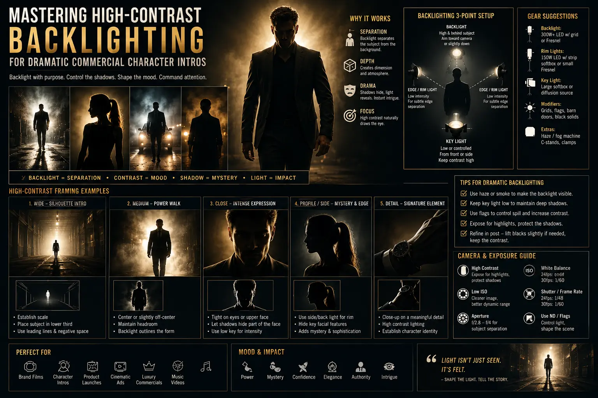
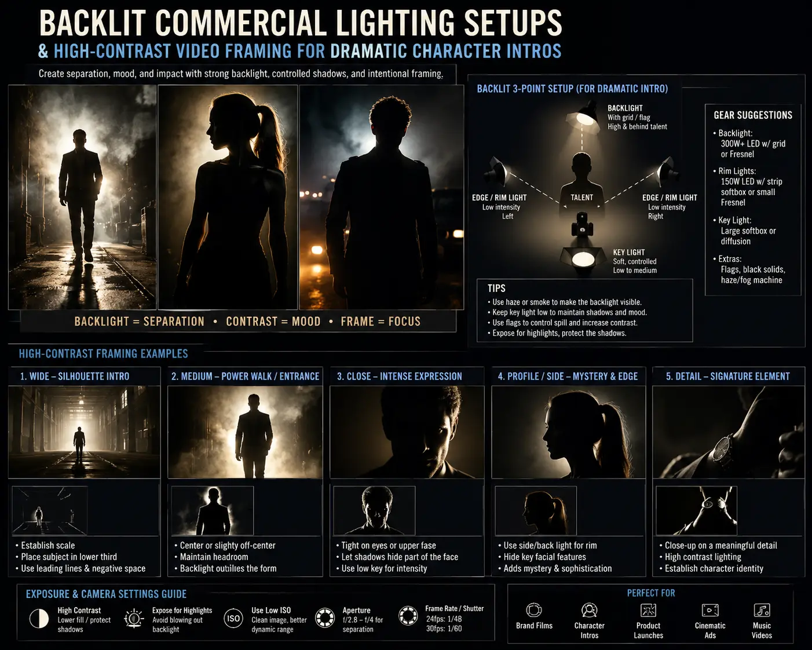
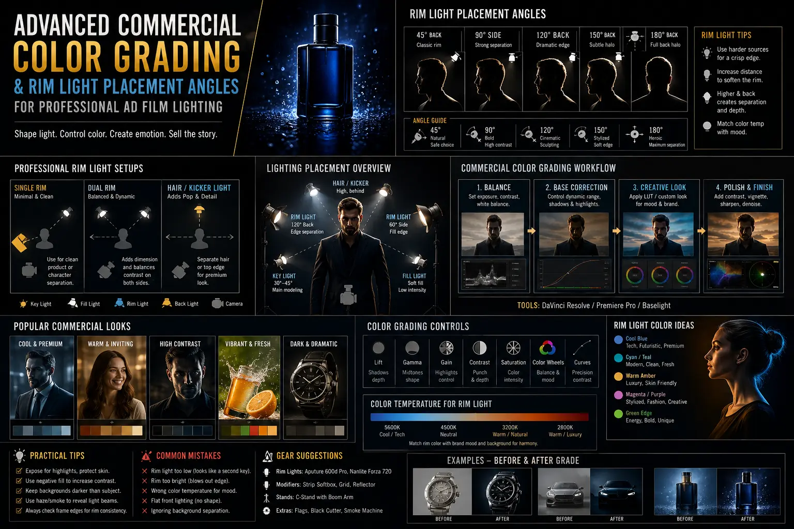

Mastering High-Contrast Backlighting for Dramatic Commercial Character Intros
The Psychological Impact of Character Introductions in High-Stakes Video Advertising
In modern commercial video production, the opening three seconds determine whether a viewer continues scrolling or remains captivated. When introducing a brand hero, an athlete, a luxury spokesperson, or an enigmatic protagonist, flat key lighting fails to create emotional weight. To command immediate authority and foster intense audience curiosity, top-tier cinematographers utilize Backlit commercial lighting setups to sculpt subjects against shadow. By deliberately obscuring facial features while outlining body architecture, directors build visual intrigue that forces the viewer's subconscious to lean in.
Implementing High-Contrast Rim Lighting is not merely an aesthetic preference; it is a narrative catalyst. When high-power directional light sources slice through dark studio backgrounds, they carve crisp gold or silver edge highlights around the subject's posture, shoulders, and hair. This technique establishes immediate figure-ground separation and transforms a standard brand presenter into an iconic silhouette. Achieving this level of visual impact requires precise rim light placement angles, zero unwanted lens flare, and rigorous post-production workflows that leverage Advanced Commercial Color Grading to turn raw high-key highlights into cinema-grade visual assets.
Whether you are filming a high-octane sports apparel commercial, launching a luxury fragrance, or introducing a tech brand founder, mastering the geometry of backlighting elevates production value exponentially. In this comprehensive guide, we unpack the light shaping tools, optical principles, color science, and camera movement strategies required to execute unforgettable dramatic visual reveals in professional ad film lighting.
Deconstructing High-Contrast Rim Lighting and Silhouette Framing
At its technical core, High-Contrast Rim Lighting relies on placing a hard, high-intensity light source behind the subject, oriented back toward the camera lens. Unlike classic three-point portrait setups where the key light provides primary illumination on the face, a dramatic backlighting ratio elevates the backlight to 3 to 5 stops brighter than the frontal fill. When the key light is deliberately turned off or reduced to a whisper of fill, the scene transitions into pure Commercial Character Silhouette Framing.
Silhouette framing strips away distracting surface details—facial blemishes, subtle clothing prints, or background clutter—and focuses the viewer's gaze entirely on form, gesture, and movement. The human brain rapidly processes edge contours before resolving facial identities. By presenting a bold rim-lit outline, cinematographers invoke classical theatrical suspense:
- Form Definition: Hard backlighting outlines the anatomical contours of talent, emphasizing athletic tone, elegant posture, or strong jawline geometry.
- Contextual Isolation: High ratio backlighting detaches the subject from murky or low-key backgrounds, ensuring absolute focal clarity even on small mobile screens.
- Narrative Anticipation: Holding a hero character in shadow for the first 2 seconds creates a psychological vacuum. When the character finally turns into a subtle key light or steps forward, the resulting dramatic visual reveals hit with maximum emotional payoff.
Precision Geometry: Calibrating Rim Light Placement Angles
The difference between a muddy, flared shot and a razor-sharp commercial reveal lies in calculating exact rim light placement angles. Placing a backlight too close to the camera axis causes light to spill across the side of the face, destroying the silhouette. Conversely, placing it directly behind the subject without elevation can block the light fixture completely or generate direct lens flare that washes out sensor contrast.
Cinematographers achieve optimal results by positioning primary rim fixtures at angles between 135 degrees and 150 degrees off-axis relative to the camera line. This positioning casts a sharp, wrap-around edge highlight that traces the cheekbone, neck, and shoulder without spilling onto the nose bridge. Elevating the fixture 2 to 3 feet above eye level ensures that hair textures glisten and shoulder lines pop, creating a strong three-dimensional crown around the talent.
Executing these angles effectively demands strict directional light control. Uncontrolled hard light bounces off studio walls, raising ambient exposure and ruining black levels. To maintain clean contrast:
- Egg-Crate Honeycombs and Grids: Attaching 20-degree or 40-degree grids to softboxes or beauty dishes narrows beam spread, ensuring light falls exclusively on the subject's back edges.
- Solid Flags and Cutters: Positioning 4x4 black floppy flags between the rim source and the camera lens eliminates stray flare rays while keeping sensor black points crisp.
- Barndoors and Snoots: Utilizing narrow barndoors on hard point-source LEDs (such as 1200W COB lights or HMIs) shapes light into narrow ribbons that trace muscles and garment seams with surgically tight precision.
Immediate Viewer Retention
Captivates scrollers in the first 3 seconds by creating mysterious dramatic visual reveals through high-contrast lighting ratios.
Sculptural Subject Separation
Employs High-Contrast Rim Lighting to physically pop hero talent off dark, moody backgrounds with glowing edge contours.
Surgical Directional Control
Utilizes flags, honeycombs, and tight rim light placement angles to prevent sensor glare and protect true black levels.
Cinematic Color Grading Latitude
Unlocks rich creative control in Advanced Commercial Color Grading, enabling teal/gold highlight-shadow split tones.

Camera Movement & High-Contrast Video Framing Dynamics
High-contrast backlighting becomes infinitely more dynamic when combined with intentional camera movement and modern high-contrast video framing. A static backlit shot is intriguing, but a moving backlit camera movement builds overwhelming cinematic momentum.
Consider a classic commercial character intro sequence: The scene opens with a slow dolly-in towards a full silhouette. As the camera glides forward, the talent slowly turns their head from profile to three-quarter view. The hard rim highlight sweeps across the jawline, momentarily catching the edge of the eye socket before dipping back into shadow. This micro-movement creates a rhythmic strobe of highlights and shadows that hypnotizes the eye.
Key framing strategies for high-contrast video framing include:
- Negative Space Centering: Position the backlit subject in the lower third or off-center vertical axis, allowing atmospheric haze or subtle background textures to occupy the remaining negative space.
- Lens Selection & Anamorphic Flare Control: Shooting backlit setups on prime lenses or anamorphic glass creates organic horizontal streak flares. When combined with tight directional light control, anamorphic rim flares add a tactile, high-budget sheen to commercial intros.
- Atmospheric Haze Enrichment: Introducing a light haze (using oil-based or water-based hazers) renders the rim light's beam path fully visible as volumetric light shafts. This adds volumetric depth to Backlit commercial lighting setups, making the space feel tangible and cinematic.
Advanced Commercial Color Grading for Backlit Commercial Scenes
Capturing stunning raw footage on set is only half the battle. Bringing Backlit commercial lighting setups to life requires Advanced Commercial Color Grading in post-production software like DaVinci Resolve Studio. Because backlit shots contain extreme luminance ranges—from unexposed deep shadows to clipping-point highlights—colorists must handle dynamic range with extreme precision.
The grading pipeline for backlit commercial reveals follows a multi-node structural workflow:
- Color Space Transformation & Highlight Roll-off: Transforming camera-native log profiles (such as Arri LogC4, REDWideGamut, or Sony S-Log3) into ACEScct or DaVinci Wide Gamut Intermediate ensures natural highlight roll-off. Softening clip boundaries turns hard rim highlights into creamy, luminous glows rather than harsh video clipping.
- Qualifying Rim Highlights: Using HSL qualifiers or Luma keys to isolate the high-luminance rim edges allows colorists to push stylized tones into the rim light independently of skin tones. Pushing warm amber, tungsten gold, or electric cyan into the rim highlight creates striking color contrast against cool teal or neutral black shadows.
- Shadow Noise Cleanup & Black Point Anchoring: Underexposed facial areas in Commercial Character Silhouette Framing can introduce sensor noise if shadows are lifted inappropriately. Applying spatial and temporal noise reduction in node passes while clamping true blacks ensures deep, velvet shadow tones without digital grain artifacts.
Broadcast & TVCs
- High-power HMI rim sources (4kW–12kW) penetrating large studio stages
- Strict Rec.709 & HDR broadcast standard compliance for contrast limits
- Dynamic camera movements on cranes, Technocranes, and Steadicams
- Iconic 16:9 cinematic framing tailored for prime-time brand storytelling
Social Media & Reels
- High-impact 9:16 vertical high-contrast video framing for mobile displays
- Aggressive 3-second hook reveals to maximize retention analytics
- Compact high-output LED monolights (Aputure 1200d, Nanlite 720B) for fast setups
- Vibrant color-graded rim highlights designed to pop on OLED smartphone screens
Brand Film Teasers
- Atmospheric volumetric haze paired with anamorphic rim flares
- Subtle key fill light reveals that gradually expose character identity
- Custom LUT development combining warm golden rims with deep teal shadows
- Exquisite detail preservation in professional ad film lighting workflows

Step-by-Step Practical Blueprint: Executing the Ultimate Hero Reveal
To help creative directors, cinematographers, and production teams execute flawless dramatic visual reveals, we have detailed a proven on-set blueprint for high-contrast commercial intros:
1. Pre-Production Rigging & Lighting Plot: Map out fixture positions on a CAD grid. Place two hard LED point sources (with narrow reflector cones) at 140 degrees behind the talent position to serve as dual rim/hair lights.
2. Flagging & Spill Control: Rig 4x4 solid flags directly in front of the light heads, cutting off light spill so no direct rays strike the camera lens element. Verify zero flare artifacts on your production reference monitor.
3. Atmospheric Haze Application: Fill the stage with an even haze density. Use silent fans to disperse heavy fog into a transparent mist, making the rim light's directional rays visible without obscuring talent sharpness.
4. Camera Movement Synchronization: Choreograph the camera movement. Start in a tight close-up on the character's ear/neck rim highlight. As the music track drops, dolly back rapidly while the character turns into a soft 50-degree fill light, delivering the hero face reveal.
5. Color Grading Polish: Import raw footage into DaVinci Resolve. Apply Advanced Commercial Color Grading to compress highlight peaks, cool down the shadow floor, and sharpen the rim boundary, yielding a commercial masterpiece.
Why Brands Partner with The PhD Ads for High-Impact Commercial Production
Creating high-end commercial video content that drives revenue requires more than standard equipment—it demands deep visual literacy, meticulous lighting craft, and specialized color science. Based in Madurai, The PhD Ads is a premier creative agency specializing in professional ad film lighting, high-contrast rim visual setups, and cinema-grade post-production.
Our team collaborates with ambitious regional and international brands to craft visual narratives that grab attention and convert viewers into loyal customers. From concept development and studio light design to Advanced Commercial Color Grading and cross-platform mastering, we deliver commercials that stand out in crowded digital marketplaces.
Key Topics
Ready to Create Cinematic Dramatic Character Intros with Rim Lighting?
At The PhD Ads in Madurai, we specialize in advanced commercial color grading, high-contrast rim lighting setups, commercial character silhouette framing, and high-impact ad film production designed to captivate your target audience.
Email: team@e2o.in